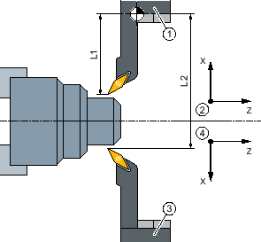

You always program in the basic coordinate system (workpiece coordinate system of the first tool holder). You do not have to take into account in which tool holder the tool is inserted.
If a tool on the second tool holder is selected, the X and Y axes are mirrored and the main spindle and counterspindle are offset (rotated) through 180°.
① | Tool holder 1 |
② | Workpiece coordinate system when using the first tool holder |
③ | Tool holder 2 |
④ | Workpiece coordinate system when using the second tool holder |
In the simulation, the tool is always displayed on the correct side, just the same as it is used at the machine.
The programmed C offset around 180° only affects C axes, not spindles.
It is not possible to machine a thread with tools that are distributed between both tool holders.
The following points must be taken into account for G code programming:
After a tool change, tool mirroring on the second tool holder is automatically activated.
When a TRANSMIT command is programmed, tool mirroring on the second tool holder is automatically activated.